The systems may be down. The customer still needs what was promised.
CONTINUITY Ω is a project to help a business preserve an essential customer commitment when its usual way of working fails. It looks for what is missing, helps construct a workable alternative and makes the evidence for the result inspectable. [C1, pp. 5–8]
A restored order system can look healthy while missing the latest approved change. A backup supplier can have an available machine but lack the right files, materials or production slot. Continuity depends on the whole path from the accepted order to the accepted result.
Find the missing part
Expose the record, dependency or agreement that prevents the promise from being kept.
Build a usable way through
Connect the information, capabilities and willing participants needed to deliver.
Earn the conclusion
Check the result against the original agreement and preserve the evidence. [C1, pp. 9–13]
The larger ambition is to make useful continuity economically possible for businesses that cannot justify duplicating all their operations—and to retain each proven capability for future work. [C1, pp. 17–21]
One continuing example
The printer still owes the labels
Invented teaching case. A regional printer has promised 10,000 approved packaging labels using artwork v3, due at the agreed location by Thursday 16:00 in the agreed time zone. A cyber incident disables its usual workflow. Waiting for complete restoration may miss delivery. A qualified alternative printer could help if the complete route works. [C1, pp. 5, 7–8]
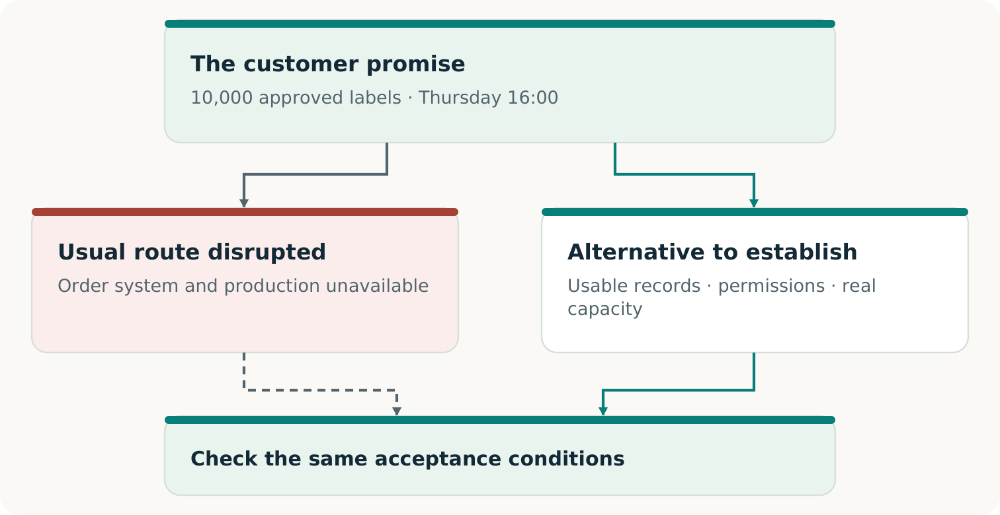
Two possible routes, one customer commitment. The original requirements remain the reference for acceptance.
The alternative needs the current order and artwork, permission to use them, compatible production, a genuinely available slot and timely delivery. A successful handoff must also prevent duplicate production when the original system returns. [C1, pp. 11–13]
The economy of continuity
Make the fallback worth providing
A printer with spare equipment and a buyer worried about disruption do not automatically have a service they can use. Someone must prepare the work, reserve usable capacity, verify performance and fund each stage. [C1, pp. 17–19]
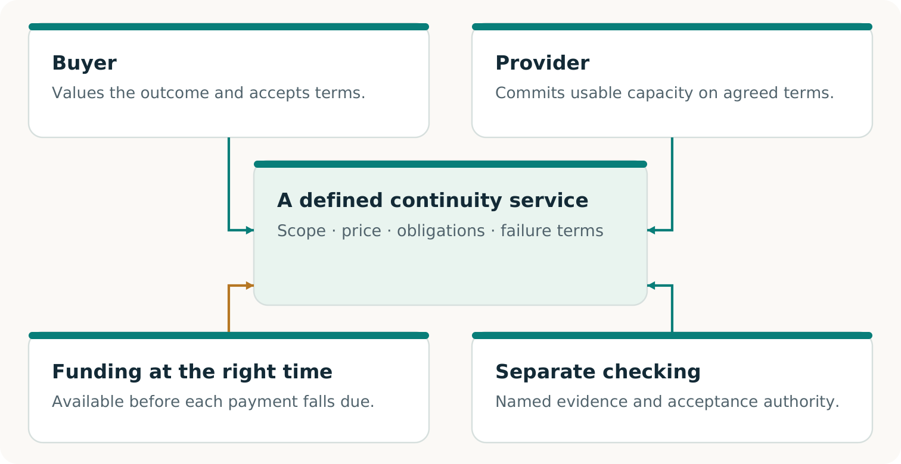
A proposed continuity service connects a useful capability with responsibilities, capacity, acceptance and payment that participants actually agree to.
CONTINUITY Ω explores the technical route and this arrangement together. A portable production package can make a reserved slot useful; an accepted reservation can make the package worth preparing. Neither may solve the problem alone.
Shared preparation may reduce cost. Capacity must still cover the promises that can activate together, and money must be available when needed. Real purchases and repeat use are separate evidence. [C1, pp. 18–19; F2, p. 3]
Three questions, three kinds of evidence
Know what deserves confidence
Was the promise kept?
The specified work met the agreed quantity, quality, deadline and acceptance conditions. An accepted software output supports a software result; physical delivery requires its own observation.
Does the arrangement work?
The necessary consent, rights, capacity, incentives and funding fit together. A model can test supplied assumptions; real readiness requires evidence about the actual participants.
Is there a viable market?
Real parties choose the offer, accepted value is delivered, payment is collected and complete costs are counted. Additional adoption or renewal supports repeatability. [C1, pp. 8, 13, 17–20; F2, p. 3]
“Independently verified” should tell you who checked, what they inspected and how their check was separated from producing the result. A second AI or a separately written program can help find errors; the relationship and remaining shared assumptions must stay visible. [C1, pp. 6, 13, 22–23]
Where to go next
Read Volume 02 for the story and ideas. Use Volume 03 to prepare a bounded pilot and Volume 04 to record decisions. Consult Volume 05 for the dated evidence review: the research, executed software work and claims that still need real-world support.
A customer waiting for a delivery needs the right goods on time. The fact that a server has restarted matters because it may help produce that result. It does not, by itself, settle whether the order is correct, the goods can be made or the customer will receive them.
CONTINUITY Ω is a project to help a business keep a defined customer promise when its usual route is disrupted. It investigates what the promise depends on, helps construct missing means and checks whether the resulting arrangement can deliver the agreed outcome. [C1, pp. 5–8]
That focus creates room for invention. An unavailable application might be restored. A protected record might make the relevant work possible without it. A qualified partner might produce the order while the original site recovers. Each option deserves the same outcome test.
Where the ambition goes further
Continuity planning already uses alternatives, rehearsals and recovery evidence. The research ambition here is to integrate their discovery and construction with voluntary commercial arrangements—and learn which retained capabilities improve later work. A capable conventional service remains a legitimate winner. [C1, pp. 6, 17–21]
The following pages follow one fictional printer order through that reasoning. They explain the opportunity and the evidence needed to pursue it. The practical volumes then turn the same case into a pilot and editable working records.
The printer’s Thursday commitment
Recover the order the customer accepted
This continuing case is invented for teaching. Its quantities, times and financial figures are not reported customers, measurements or prices. The agreed location and time zone remain part of the fictional commitment.
The accepted order
Deliver 10,000 approved labels, using artwork v3, by Thursday 16:00 at the agreed location.
The restored record
After the incident, the recovered order book shows 8,000 labels.
The retained amendment
An authenticated record outside the restored view shows an accepted increase of 2,000 labels.
A process that checks only whether the application opens could miss the discrepancy. A careful comparison with the retained amendment reveals it. The missing 2,000 labels are part of the customer’s accepted order, not optional extra production.
This is why the source of evidence matters. If no available record distinguishes the 8,000-label history from the 10,000-label history, another reviewer cannot infer which actually occurred. The remedy may be a protected acknowledgment or a better record-preservation process. [C1, pp. 9–10]
Ordinary reconciliation can find this omission too. CONTINUITY Ω must earn additional value through the complete route it helps construct, the work it saves or the outcome it enables. A fair comparison gives a capable conventional method the same evidence. [C1, pp. 19–20]
From an objection to a better route
Make the second intelligence useful
One AI can propose a plan; another can search for consequential omissions. Give the challenger a concrete question: Does the recovered order preserve every accepted change through the agreed cutoff? In our case, the useful objection identifies the missing 2,000-label amendment and its effect on delivery.
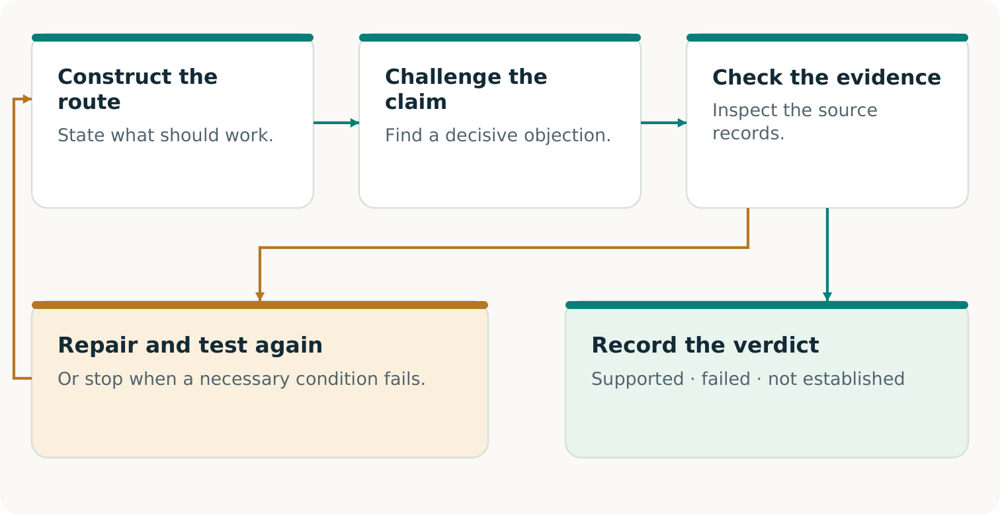
An objection becomes useful when evidence settles it and any repair is checked against the original promise. An objection may also be rejected or remain unresolved.
The challenger needs the source, not just the first reviewer’s summary. Its objection must identify a material requirement, a plausible failure and a way to check the allegation. A second model’s confidence is not the deciding evidence. [C1, pp. 5–6, 10–11]
Transformational Intelligence in practice
Change the means while preserving the agreement
The initial question might be: “How do we restart this plant before Thursday?” The customer’s authorized purpose may permit a broader question: “How can we deliver the approved labels by Thursday 16:00?” [C1, p. 5; F1, pp. 2–3]
Restoring the normal route and constructing an authorized alternative are competing means of meeting the same commitment.
This is the transformational move: examine whether an inherited way of working is unnecessarily restricting the outcome. Build a different information path, production method or cooperation arrangement when it improves the complete result. Keep the strongest existing route available for comparison.
Make the obligation portable
Give the next provider something it can use
The alternate printer cannot work from the sentence “Please finish our urgent order.” It needs enough reliable information and authority to produce the same approved result. Creating that usable handoff is itself a capability. [C1, pp. 11–12]
Describe the work
The current 10,000-label obligation, artwork v3, approved material and quality requirements, delivery details and deadline.
Authorize the work
The necessary use rights, permitted data disclosure, release authority and authenticated way to activate the agreed route.
Close the loop
Stable order identifiers, amendments, cancellations and receipts that prevent duplicate production or invoicing when normal operations resume.
Portability is about preserving meaning. A file conversion is successful only if the next provider receives the correct specification and can use it under the agreed conditions. A beautiful preview cannot replace a production file that the equipment and operators can actually use.
Keep the package small and sufficient
Transfer the necessary approved information through the permitted route. Copying the entire affected environment may add exposure without helping production. Current versions, bounded access and a reachable revocation process matter because a once-valid package can become unsuitable.
At this point, the case has progressed from a corrected record to a possible operating route. The next question is whether that route will still be usable when the disruption occurs and other customers need it too. [C1, pp. 11–13]
Dependencies and scarce capacity
Make sure the backup avoids the actual failure
A second printer can still depend on the same failed login, material source or transport link. Another supplier name does not by itself create a usable path. The complete route must survive the disruption being claimed. [C1, pp. 11–12]
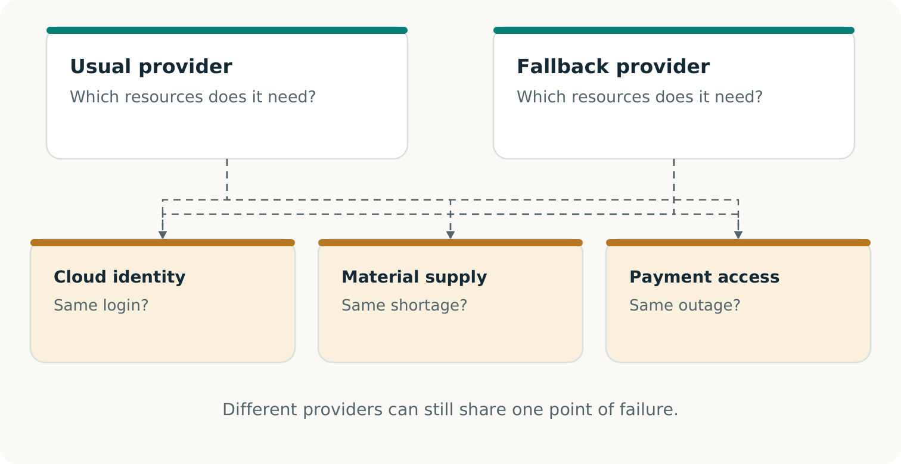
Inspect the whole route, including shared prerequisites. A missing shared dependency can stop every nominal alternative.
In our fictional case, the alternate window has 12,000 units of usable capacity. Earlier protected work already needs 2,000. Exactly 10,000 remain for our order. A further simultaneous request for 5,000 cannot fit without changing the arrangement.
Invent the Economy applied to continuity
Create an arrangement people can choose
The buyer needs dependable output; the provider needs compensation for capacity and obligations. Preparation, checking and delivery must also be funded. CONTINUITY Ω explores the capability and this voluntary arrangement together. [C1, pp. 17–19; F2, pp. 2–3]
The technical and commercial pieces must fit together. The parties’ consent, alternatives, obligations and funding determine whether the proposed service is usable.
Fictional CAD: the primary printer’s separate purchase of the continuity service, excluding the end customer’s original invoice. A quote of $5,600 against estimated complete cost of $5,000 suggests $600 of projected contribution. But $4,700 falls due before acceptance and only $1,200 is available: a $3,500 funding gap.
Three achievements that can grow together
Separate a working route from a proven market
A good continuity service combines an accepted outcome with an arrangement people can sustain. These achievements are connected, but they answer different questions. Keeping them visible helps the buyer know what is being purchased and the provider know what has been earned.
Outcome
Did the specified work meet the original requirements? For our order, evidence would have to establish the agreed labels, quantity, quality, deadline and acceptance. A software rehearsal establishes only the software result it actually exercised.
Service feasibility
Can the arrangement be carried out under its stated conditions? Consent, rights, simultaneous capacity, incentives, complete costs and funding timing must fit. A supplied model establishes a conditional calculation; actual readiness needs actual evidence.
Commercial proof
Do real participants accept the terms and receive the promised value? Record accepted delivery, collected payment, all campaign costs and continuing obligations. Further independent adoption or renewal is needed to support repeatability. [C1, pp. 8, 17–20; F2, p. 3]
This is where a new economic possibility could emerge. A firm unable to justify a duplicate plant might find a qualified, maintained fallback worthwhile. A provider might find that serving such commitments is worthwhile too. Their preferred arrangement must still beat their credible alternatives and remain feasible when demand arrives together.
Volume 05 gives the dated picture of the existing evidence. It distinguishes the original research, later local software work and the additional observations required for operational or commercial claims.
The Continuity Passport
Make the result easy to inspect and use
A Continuity Passport records the promise, exercise, observations and when conclusions need rechecking. It makes the next decision easier. [C1, pp. 13–14]
Record
What the reader needs
Commitment
Recipient, output, quantity, quality, deadline, permissions and acceptance authority.
Source custody, checker, method, producer relationship and trust assumptions.
Use and validity
Terms and capacity status; invoices or collections; costs, duties, expiry, revocation and recheck triggers.
Specify the independence
Separate source custody can protect the reference. Separately implemented checking can expose a shared coding mistake. An outside assessor can add organizational separation. These address different risks. Another AI or code path within the same project does not automatically provide external assurance. [C1, pp. 6, 9, 13, 22–23]
Reconciliation can be demonstrated while physical delivery remains unestablished. A correct refusal may pass a safety test while the complete promise fails. Fresh verification checks current evidence; a saved Passport records the past. [C1, pp. 13–14; R1; R3]
The ALPHA GENESIS FLYWHEEL Ω connection
Use one capability to make another possible
AI progress may make new tools practical. Suppose a real accepted exercise produces a useful adapter, checking procedure and their validity conditions. A different production process could benefit from that inheritance—or reveal a failed transfer. [C1, p. 21]
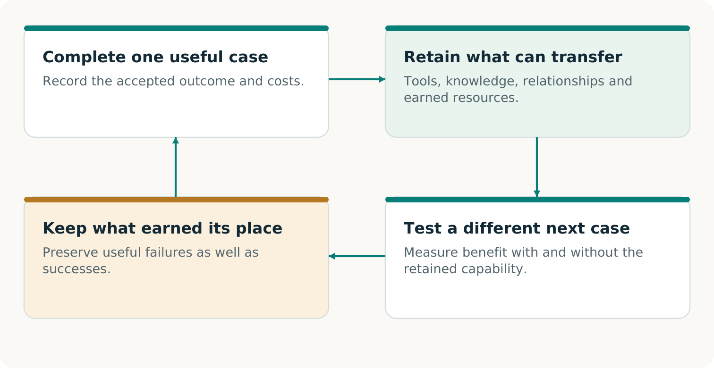
A proposed learning cycle: retain a qualified capability, test its contribution to different fresh work and use the observed result to improve the next decision.
ALPHA GENESIS FLYWHEEL Ω asks whether today’s validated construction improves what can be built next. Three gains need separate evidence: earnings fund continuation; inherited means help a new task; an improved discovery procedure performs better across fresh campaigns. [F3, pp. 3, 8, 20]
From understanding to a useful first exercise
Begin with one promise worth preserving
The right starting point is a consequential commitment with a clear acceptance decision. It is small enough to investigate responsibly and important enough that preserving it would matter. The printer case supplies a way to reason; your actual promise supplies the requirements.
Name the outcome. What must reach whom, at what quality, by when, and who can accept it? Include the records and permissions that make those terms authoritative.
Find the real obstacle. Compare the strongest available complete routes. Determine whether the blocker is information, technical compatibility, capacity, consent, funding or a combination.
Choose a decisive observation. Identify the test that could change the decision. Agree its scope, resources and safe operating boundary before carrying it out. [C1, pp. 19–20]
Keep the choice open
Use an existing service when it provides the better complete result. Construct a missing capability when its prospective value warrants the work. Stop or revise when evidence or economics do not support the next step. A useful method must recognize all three possibilities.
Continue with the working volumes
Volume 03 develops the pilot around the same fictional order. Volume 04 supplies editable records for the actual promise, participants, capacity, evidence and economics. Volume 05 shows which project claims have support at its stated source revision and which need additional observation.
The ambition is concrete: make an important activity possible through a workable arrangement, demonstrate its value, and retain what helps a different promise next. [C1, pp. 21–23]
A useful pilot answers a concrete question: can this customer receive the agreed result, on time, when the usual route is unavailable? Work backwards from acceptance. Identify the missing records, rights, capacity and funding; construct the permitted alternative; then test the result. [C1, pp. 5–8]
Who buys?
The disrupted printer buys a scoped continuity service. Its customer remains the beneficiary of the original order.
Who delivers and checks?
A qualified alternate printer produces the work; the named acceptance authority decides whether it meets the original terms.
Who coordinates?
The pilot lead assembles permissions, reservations, evidence and funding, with owners for each remaining duty.
This is a proposed field method, not a report of deployment. The repository’s first real pilot also remains a proposal without actual approvals. Use the companion workbook to turn every assumption into an agreed term, an observation or a visible gap. [R6]
Output 1 · An authoritative promise card
Agree on what success must mean
The operations lead drafts the promise card; the authorized business owner and acceptance authority settle its terms. Capture the existing commitment, including amendments and cancellations. Do not invent a convenient new objective for the pilot. Workbook A is the working record. [C1, pp. 7–8; R6]
Freeze this
Illustrative case / required decision
Result
10,000 labels using approved artwork v3 and the agreed material, dimensions and quality tolerances.
Clock and place
Receipt and acceptance by Thursday 16:00, America/Toronto, at the agreed customer location; add the actual calendar date.
Declared disruption
Identify which primary systems or production steps are unavailable inside the controlled exercise.
Acceptance
Name the person entitled to accept, the inspection method, evidence and rules for partial or defective output.
Authority and boundaries
Specify permitted data, participants, interventions, stop authority and exclusions.
Choose the claim before choosing the test
A tabletop exercise can establish preparation. A production rehearsal can include real goods and actual customer acceptance. A substitute output supports only its expressly agreed exercise claim. Record recovery time separately from the customer’s deadline; a restarted server or dispatched parcel does not establish accepted delivery. [C1, pp. 7–8; R6]
Ready to advance: the named authorities have agreed on the version, scope and acceptance rule. Otherwise: preserve the draft and resolve the exact missing decision.
Output 2 · A trusted obligation and a usable production package
Find what the backup forgot
The custodian retrieves accepted history through the agreed cutoff. The reviewer finds the missing amendment: 8,000 + 2,000 = 10,000 labels. Producing 8,000 misses the promise. [C1, pp. 9–11]
Check the objection, decide from evidence, repair and recheck the original promise.
The provider needs approved artwork, specifications, rights, quantity, deadline, destination and release authority. Stable identifiers and cancellation rules prevent duplicate production or billing. Record these in B–D. [C1, p. 11]
Advance with supported records and a permitted usable package. Missing decisive evidence means NOT ESTABLISHED. Checksums cannot prove source completeness. [C1, pp. 9–10, 14]
Output 3 · A complete arrangement people can accept
Turn interest into a usable reservation
Ask each participant what they will contribute, what they need in return and what evidence makes the commitment usable. A willing printer without a reserved slot, a slot without approved artwork, or a buyer without activation authority leaves the route incomplete. Workbooks B–C join these complements. [C1, pp. 11–13, 17–18]
Participant
Commitment needed for this pilot
Buyer printer
Accepted service scope, permitted information, activation authority and payment terms.
Alternate printer
Qualified process, materials, named capacity window, acknowledgement and failure/withdrawal terms.
End customer
Applicable specification, necessary permissions and named acceptance authority.
Coordinator and reviewer
Execution responsibilities, evidence checks, fees and disclosed relationships; no reward for a favourable verdict.
Check setup, sequencing, materials, people, quality, transport and simultaneous demand. Identify dependencies shared with the failed route or other buyers. Obtain the actual provider acknowledgement and verify what its reservation book does and does not include. A local table cannot reveal undisclosed bookings. [C1, pp. 11–13]
Ready to advance: the necessary parties have accepted a current, complete arrangement and its capacity is evidenced. Otherwise: add qualified capacity, change the proposed arrangement with consent, or retain the limitation. Preserve the original customer promise in every comparison.
Output 4 · A complete cost and funded timing plan
Resolve the cash gap before committing
The coordinator funds the separate continuity service purchased by the printer. The original customer invoice stays outside this example. All figures below are invented Canadian dollars. [C1, pp. 17–19]
Illustrative cost
CAD
Acquisition, preparation and coordination
1,200
Reserved production slot
700
Production, transport and separate verification
2,800
Aftercare and reconciliation
150
Provisional contingency allowance
150
Modeled complete cost
5,000
A proposed CAD 5,600 fee leaves CAD 600 modeled contribution. Neither is collected revenue or realized profit. The contingency is an estimate, not a liability limit.
Possible repairs: voluntary milestone payments, authorized working capital or a cheaper complete route. Recalculate refundable deposits and protected duties. Workbooks E–F retain the failed plan and revised terms. [C1, pp. 18–19]
Advance only with accepted terms and available funds covering payment and failure paths. Include lifecycle resources, failures and remaining duties; expose unknown costs. [R6]
Output 5 · A comparison that could change the decision
Let the strongest complete route compete
The decision is whether this arrangement improves the complete outcome enough to justify choosing it. Give capable alternatives the same promise, relevant records, permissions, resource opportunities and acceptance rules. A conventional provider may construct the same portable package and capacity agreement. [C1, pp. 18–20]
Candidate
What to compare
Incumbent or self-provisioned route
A competent recovery and alternate-production offer, including coordination, reservations and checks.
Direct AI-assisted route
Where accessible and authorized, use AI directly with equivalent inputs and total resource budgets.
CONTINUITY Ω route
Add explicit challenge, evidence adjudication and construction; count the extra effort and any useful outcome.
No purchase
The buyer may rationally retain its present arrangement. Record the actual decision and reasons.
Match the evidence to the comparison
A quotation compares proposed terms. A matched rehearsal compares observed execution. Neither alone establishes general superiority. Decide the comparison method before the run; record which candidates were actually run, which were only quoted and which were unavailable. Do not score an unrun candidate as a failure. [C1, pp. 19–20]
Measure accepted correct output by the deadline, omissions, duplicates, defects, unresolved claims, staff effort, permitted disclosures, total cost and funding burden. Include all interventions and failed attempts. If an exercise uses substitute output, compare substitute results; reserve physical-delivery claims for actual accepted goods. [R6]
Output 6 · A traceable run and separate acceptance
Execute the work and record the handoffs
Only begin the agreed operation after authority, sources, capacity and funding are ready. The proposed first pilot is isolated and non-destructive; a real production rehearsal can manufacture and deliver actual labels without launching a cyberattack or sabotaging live systems. Workbook G is the run sheet. [R6]
Exercise lead: record the start time, versions and unavailable dependencies. Keep the agreed stop and contact channels reachable. Record every intervention outside the declared route.
Source custodian and provider: release the authorized package, acknowledge the order and confirm that the reserved slot and required inputs are still available.
Provider and reviewer: perform the authorized production and checks; retain counts, quality observations, timestamps, defects, rework and transport evidence.
Customer acceptance authority: record receipt and the actual acceptance or rejection against the frozen specification and deadline. Dispatch alone is insufficient.
Coordinator: record the acceptance decision, invoices, collected receipts, costs, refunds and residual duties separately. Payment is not created by issuing an invoice.
If the primary route or an unplanned person rescues the order, record that assistance. Customer delivery may still succeed, while the claimed independence from that unavailable resource fails. If no physical work is performed, actual delivery remains NOT ESTABLISHED. [C1, pp. 8, 20; R6]
Ready to conclude: an authorized acceptance authority can inspect what actually occurred, including adverse evidence and all material departures from the plan.
Outputs 7–8 · A Passport and a qualified next step
Close with a useful decision
Use workbook H to separate outcome, whole-service feasibility and market evidence. Each can be DEMONSTRATED, FAILED or NOT ESTABLISHED within its stated scope. Record the checker, method, sources, relationships, limitations and changes requiring a new check. Another AI is not automatically an independent source or third-party certification. [C1, pp. 13–14]
Illustrative case at its funding gate
Honest conclusion
Order reconstruction
8,000 + 2,000 = 10,000 in the teaching history.
Proposed complete service
Fails the stated cash plan: CAD 3,500 is missing before acceptance.
Customer outcome
NOT ESTABLISHED: the example stops before physical execution.
Market evidence
NOT ESTABLISHED: no real purchase, delivery or collection is reported.
This result tells the team what to construct next: a voluntarily accepted and funded arrangement, or a better complete route. Keep the failed plan. When revised terms are actually obtained, recheck the original promise before execution. The fictional numbers themselves establish no willingness to pay. [C1, pp. 17–20]
Retain what could enable a different promise
A useful order schema, adapter, reservation method or checker can be retained with its rights, prerequisites, costs and known failures. Workbook I asks whether it helps a distinct fresh task compared with the strongest complete route without it. Use equivalent starting resources and count requalification. [C1, p. 21]
Use one workbook for one customer promise and one exercise. Fill what is known, name what is missing and link the evidence. An empty field means unknown or unentered. It never means zero cost, consent or success. These working records do not themselves create permission, reservations or certification. [C1, pp. 7–8, 13–14]
Prepare · A–D
Freeze the promise; agree who contributes what; qualify capacity and sources.
Fund and run · E–G
Price the whole service, resolve cash timing and record the authorized operation.
Decide and reuse · H–I
Issue a bounded Passport; preserve changes and test a distinct next opportunity.
Identify this workbook
Pilot ID; owner; version; preparation date; secure location of the evidence index.
Use stable evidence IDs, such as ORDER-01 or RESERVATION-01, for documents held in their authorized location. Duplicate a block when needed. Keep prior versions, failed attempts and the original promise. Do not upload confidential source records to a public repository. [R6]
Complete with the promise owner and acceptance authority
Named authority; inspection and measurements; pass/fail rules; missing-evidence policy; actual goods or expressly agreed substitute.
Before proceeding, obtain the actual approval references. Changing these conditions creates a new version; it does not change the verdict on the earlier promise. [C1, pp. 7–8; R6]
Make the contribution, counterpart and decision explicit
B · The arrangement people will accept
The buyer printer purchases the continuity service; its end customer receives the original order. List the commitments that make this exchange usable. Combine roles only with their relationships disclosed. [C1, p. 17]
Participant
Contribution and return
Person / evidence ID
Buyer printer
________
________
Alternate provider
________
________
End customer
________
________
Coordinator
________
________
Reviewer
________
________
What exactly does the buyer purchase?
Preparation, reservation, activation or a defined combination; price/scope; exclusions; best complete alternative and actual decision.
What has each party actually accepted?
Person with authority; contribution/return; pending, accepted, refused or withdrawn; evidence/date; expiry and conditions. Attach one record per party.
Capacity must work when promises activate together
C · The real slot and its dependencies
Resource / window
Usable units
Protected units
New concurrent units
Evidence
________
________
________
________
________
________
________
________
________
________
________
________
________
________
________
What is genuinely reserved?
Provider, product, units, time window, acknowledgement, activation terms, expiry, cancellation/refund conditions and evidence ID.
What proves the complete route is usable?
Qualified specifications/process; materials and staff; setup-to-delivery schedule; rights and release authority; evidence.
Which failure could disable both routes?
Shared login, supplier, site, approver, machine or carrier; tested substitute; remaining common dependency.
Which competing claims remain outside this view?
Reservation-book boundary; simultaneous requests and other customers; unavailable information; responsible owner and next check.
Check each limiting resource and interval. A local calculation cannot establish undisclosed bookings or replace a provider’s commitment. Keep unqualified capacity visible as a gap. [C1, pp. 11–13; R6]
Make the important discrepancy inspectable
D · Evidence that survives the outage
Source / version
Custody, origin and location
Cutoff, coverage and gap
________
________
________
________
________
________
________
________
________
What could change whether the promise is kept?
Challenge ID; original claim; alleged omission; affected acceptance condition; reviewer and date.
Supported, rejected or unresolved; decision-maker and reason; authorized repair; version rechecked; residual gap and cost.
Duplicate the challenge block for missing orders, stale amendments, cancellations, duplicates, booking conflicts or other material issues. Challenge the checker too. Preserve failed attempts. If decisive source evidence is unavailable, record NOT ESTABLISHED rather than manufacturing certainty. [C1, pp. 9–10, 14–16; R6]
Allocate every resource once; leave unknown costs visible
E · Price the complete service
Whose costs, over which period?
Entity, promise/version, currency, horizon, internal-time valuation and shared-cost allocation; distinguish actual, estimated and unknown.
Cost group
Amount / status
Evidence / due date
Acquisition, preparation, staff and failed offers
________
________
Data, rights, AI and technical setup
________
________
Capacity reservation and opportunity-cost treatment
________
________
Materials, production and quality control
________
________
Transport, acceptance and separate verification
________
________
Rehearsals, retries and requalification
________
________
Support, financing, insurance and legal duties
________
________
Refunds, remaining duties, taxes and other items
________
________
Total, with estimates and gaps identified
________
________
What price and buying decision are supported?
Proposed versus accepted price; best complete alternative; buyer burden; measured costs and remaining uncertainty; collected receipts kept separate.
A contingency estimate is not a liability cap. Do not omit failures or count the same resource twice. Transfer due dates and protected obligations to F. [C1, pp. 17–19; R6]
Check the cash before the decision becomes an obligation
F · Fund the next commitment
What money is actually available?
Entity, currency, opening cash, protected obligations, restricted funds and authorized account evidence. Mark this sheet proposed or actual.
Stage / date
Cleared inflows
Paid outflows
Reserve required
Available cash
Preparation
________
________
________
________
Reservation
________
________
________
________
Production / checks
________
________
________
________
Acceptance / collection
________
________
________
________
Aftercare / remaining duties
________
________
________
________
Available cash = opening cash + cumulative cleared inflows − cumulative paid outflows − funds still protected. Keep one boundary; remove paid duties from the unpaid reserve. Forecast receipts are never actual collections. [C1, pp. 18–19]
What becomes due if something goes wrong?
Reservation/prepayment deadlines; delayed buyer payment; refund, rework or withdrawal duties; named funding source and evidence.
Which revision makes the next step fundable?
Accepted milestone terms, authorized working capital or a cheaper complete route; deposit restrictions; decision-maker, date and evidence. Preserve the failed plan.
One record of actions, handoffs and interventions
G · The actual run sheet
Use this only for the authorized scope. A production rehearsal can deliver actual goods; a tabletop or substitute exercise supports only what it performs. Preserve the original clock and record unplanned help. [R6]
What is authorized to start?
Promise/version, approvals, source cutoff, resources, start time, unavailable dependencies, stop authority and contact channel.
Handoff
Planned owner / evidence
Actual time / result / issue
Release current package
________
________
Confirm reserved inputs
________
________
Produce and inspect
________
________
Transport and receive
________
________
Accept or reject
________
________
What comparison was actually performed?
Strong complete alternative; matched promise/resources; quoted versus executed candidates; method, measurements, all human effort and costs. Mark unrun cases NOT RUN.
What happened outside the planned route?
Rescue by primary systems or people, deviations, defects, refusals, stops and repairs; affected claim; decision and evidence.
Tell the next reader exactly what was established
H · The Continuity Passport
Claim
Verdict
Evidence / limit
Record reconciliation
________
________
Fallback readiness
________
________
Agreed outcome accepted
________
________
Whole-service feasibility
________
________
Commercial evidence
________
________
Use DEMONSTRATED, FAILED or NOT ESTABLISHED for each scoped claim. Substitutes support only their agreed rehearsal claim. Actual delivery requires actual goods received and accepted. Preparation payment establishes only that purchase; invoicing is not collection. [C1, pp. 7–8, 13–14]
What did the customer actually accept?
For actual delivery: goods, specification, quantity, quality, receipt/acceptance times, named authority and authenticated proof. Identify any substitute exercise result separately.
Who checked, with which independence?
Checker and method; source custody; execution control; organizational/commercial relationships; assumptions and unclosed gaps.
Where does this Passport apply, and until when?
Promise/version, disruption, facility/window, exclusions, financial records E–F, remaining owners/duties, expiry, recheck triggers and current-status location.
History stays intact; each new claim earns its evidence
I · Test a different next use
Keep the earlier promise, verdict and evidence. Record changes to specifications, authority, capacity, sources or acceptance. Historical evidence stays historical even when its present applicability expires. [C1, pp. 13–14]
Change / old → new version
Affected claim
Owner / approval / recheck
________
________
________
________
________
________
Which different promise could become possible?
New beneficiary/problem and accepted-result target. Explain the difference from selling substantially the same service again.
Which funds remain available after prior obligations?
Collected unrestricted earnings, reserves, residual duties, successor costs/dates and authorized funding evidence.
How will its contribution be tested?
Strongest complete route without the retained capability; equivalent starting resources/content; predeclared outcome/cost measures; result or NOT RUN; owner and next decision.
The public repository supports an executed local continuity exercise. Its software reconstructs specified obligations, tries a permitted route and checks the resulting artifacts against the retained promise. That is a useful, inspectable engineering result. Its meaning depends on the exact exercise and the evidence behind it. [R1, R2, R3]
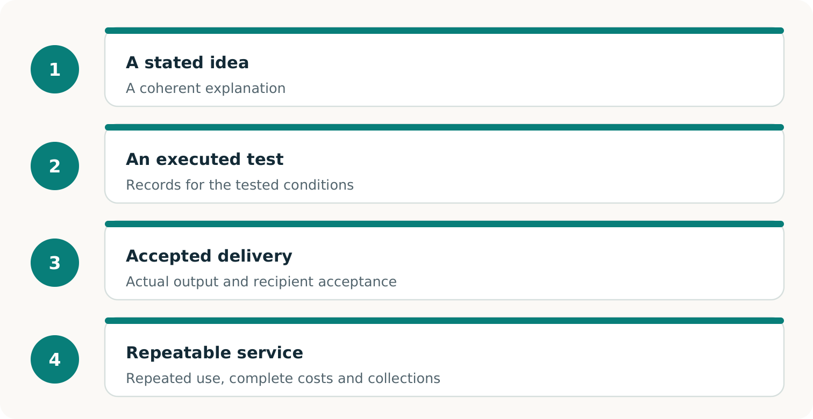
Each broader claim needs additional observations. The public main-branch evidence reaches executed local software; customer delivery and a repeatable commercial service require their own proof. [R2, R4, R6]
Outcome
Did the specified work meet the original acceptance conditions?
Service feasibility
Can willing participants provide the permissions, capacity, timing and funding the arrangement needs?
Market evidence
Do actual purchases, accepted delivery and complete costs support the commercial claim?
An executed software example with synthetic orders
One order book makes the idea concrete
A restored application can run while its order book is wrong. The base exercise exposes that problem with three label orders. The retained event history contains an amendment and a cancellation that the stale restore has missed. [R2]
Order
Retained obligation
Stale restored record
A
1,100 units
1,000 units
B
800 units
Missing
C
Canceled
600 units still shown
The authoritative total is 1,900 units in two orders. Correct reconciliation must restore B, use A’s amended quantity and keep C canceled. A route cannot improve its apparent result by quietly removing an obligation. [R2, R3]
Route exercised
Recorded outcome
Feasible primary recovery
Both obligations completed: 1,900/1,900.
Authorized backup with 2,100 units of capacity
Both obligations completed: 1,900/1,900.
Constrained backup with 1,500 units of capacity
A completed: 1,100. B refused: 800. Only 400 units remained after A.
These counts refer to durable local software outputs. The exercise does not establish printed labels or delivery to real customers. Physical production and customer acceptance need their own observations. [R2, R3]
What changed—and what each result belongs to
Read the record without losing its history
Record
Meaning
Research prototype · a755d037
29 authored tests passed; separate probes exposed input and source-authenticity weaknesses. Synthetic handoff only. [R7]
First Harness qualification · 5c92fd03
A favorable saved summary failed later fresh verification. The attempt remains unqualified and preserved. [R3]
Qualified Harness · fa9da1f5
Second attempt: 245 tests and 24 comparison executions. All 12 conventional/Harness pairs tied. [R3]
Current main · 396227d8
Later route-permission and queue-lease repairs; 253 local tests reported. Historical results retain their identities. [R5, R9]
The repairs allow authorized primary recovery without requiring backup-provider sharing permission. Both methods also reserve bounded batches so queued leases do not all age at once. Short leases, deadlines and insufficient capacity remain real constraints. [R5]
The historical count of 245 and the later count of 253 describe different revisions. The registered comparison establishes executable methods, with 12 functional ties. All 12 AI entries are NOT RUN; an incremental AI or complete-cost advantage is not established. [R1, R3, R5]
Separate checking against the same promise
What “independent” means here
Here, the useful separation is concrete: the verifier reconstructs the obligations through its own source replay and checks current durable outputs against a separately retained contract and reference. A candidate’s assertion that it succeeded is not sufficient acceptance evidence. [R2, R4]
Construct, challenge and check against the original promise. A repair is tested again; the verdict stays scoped to the evidence actually examined. [R2, R3, R4]
Retain the original authority outside the candidate’s permitted control; changing a candidate-side copy must not change the obligation.
Read current artifacts when checking again. A saved Passport describes a past assessment.
Challenge the verifier itself, including false acceptance and false rejection. A checker that refuses every result is not qualified.
How an attractive claim can be disproved
Give a critic a decisive test
A useful objection identifies an observation that would change the verdict. The documented challenge families below make that practical. They are a reading and review guide to retained experiments, not new experiments performed for this book. [R2, R3]
Challenge
What the check should establish
Change a candidate’s 1,900-unit obligation to 1,850 while retaining the original authority.
The changed package cannot satisfy the original full promise. Coherent candidate-side hashes do not make the rewrite authoritative.
Alter an output while keeping an old favorable Passport.
Fresh verification must assess the changed artifact. The old report cannot certify its present state.
Remove the independently retained reference pin.
Authority remains NOT ESTABLISHED. Recomputing a convenient replacement pin does not close the gap.
Make the backup share the failed dependency.
An unavailable logical backup cannot support completed fulfillment through that route.
Present a valid positive control to a deliberately defective checker.
False rejection must also disqualify a checker. Successful evidence should be accepted when the stated conditions are met.
Give a competent conventional method the same tools and information.
A tie does not establish improvement. Any advantage claim must survive the complete comparison and its cost boundary.
For a reproducible challenge, preserve the original authority, identify the altered copy or test mutation, record the target’s answer, then retain the separate reference verdict. State precisely which claim fails. The project’s shared-helper counterexample—accepting 1,850 against an original 1,900—shows why checking the checker matters. [R3, R9]
Commands for the public main-branch revision
Reproduce the pinned software record
Use Linux x86_64 with seccomp BPF, Python 3.10 or later, and Node.js for the repository-wide website tests. The default exercise uses local synthetic data and standard-library components. Choose unused output paths; previous attempts are preserved. These commands were not executed for this editorial collection. [R2, R5]
Read the structured result and each obligation. Suite exit 0 means the expected assertions passed; it can include an expected partial outcome. Individual verification of a partial promise returns 3. Exit 2 indicates a command error. Historical qualification uses its own code and archive pins in R3. [R2, R3]
One actual promise, one controlled commercial test
The next decisive proof
The next useful observation is an authorized rehearsal for one real business, with an actual provider and a capable alternative. The repository’s printer pilot is a proposal without real approvals. Its value is the falsifiable test it defines. [R6]
Decision
Evidence that would change it
Was the promise met?
An authentic order, frozen acceptance terms and an authorized assessor’s decision about the output actually produced. Distinguish a rehearsal substitute from physical customer delivery.
Was the arrangement feasible?
Real participant consent; lawful data use; qualified capacity net of other commitments; usable dependencies; funded production, correction and remaining obligations.
Was this commercially worthwhile?
The buyer’s actual purchase decision, collected payment, complete campaign costs and residual liabilities, compared with the same-promise conventional alternative and no purchase.
Count preparation, failed attempts, integration, staff time, reservations, execution, verification, transport where relevant, financing, support and refunds. Record when funds are needed and when they clear. A positive modeled margin cannot establish these observations. [R6, R7]
A conventional winner, a no-buy decision or a failed exercise is still a decisive finding. Preserve the conditions and the reason. The next experiment can address the demonstrated obstacle rather than assume the market already exists. [R6, R8]
From a report to an inspectable record
Leave an evidence package another person can use
A reader should be able to locate the original promise, the execution, the current check and the claim being made. The Harness separates these records so a later review can inspect the result again. [R2]
Record
What to inspect
INDEX.json
The run list, completeness and retained reference pins. Preserve its custody when transferring the evidence.
Retained authority
The contract, source history and original reference. Identify which facts are authored and which have external authentication.
Durable evidence and controller record
The actual database, artifacts, observed transitions, interruptions and timing within the declared trust model.
RESULT.json and bilingual Passports
The assessed outcome, failed or missing conditions and exact verification command. A saved presentation is a record of its assessment.
Fresh verification receipt
Which revision, current files and retained reference were checked, what the verdict was, and when the check occurred.
Understand the executed result
Start with the guide, full results and later repair notes: R2, R3 and R5.
Test the claim’s foundations
Read the threat model, registered experiment and retained validation history: R4, R8 and R9.
Decide on the next field step
Use the proposed pilot R6, with R7’s historical boundaries and R1’s repository map.
Les systèmes peuvent être à l’arrêt. Le client a toujours besoin de ce qui lui a été promis.
CONTINUITÉ Ω est un projet pour aider une entreprise à préserver un engagement client essentiel lorsque son fonctionnement habituel échoue. Il cherche ce qui manque, aide à construire une solution réalisable et rend les preuves du résultat vérifiables. [C2, pp. 5–9]
Un système de commandes restauré peut paraître sain tout en omettant la dernière modification approuvée. Un fournisseur de relève peut avoir une machine disponible sans disposer des bons fichiers, des matières ou du créneau nécessaire. La continuité dépend de toute la chaîne qui relie la commande acceptée au résultat accepté.
Trouver ce qui manque
Repérer le dossier, la dépendance ou l’entente qui empêche de tenir l’engagement.
Construire une voie utilisable
Réunir l’information, les capacités et les participants volontaires nécessaires à la livraison.
Étayer la conclusion
Vérifier le résultat selon l’entente initiale et conserver les éléments probants. [C2, pp. 9–14]
L’ambition plus large est de rendre une continuité utile économiquement possible pour des entreprises qui ne peuvent justifier le dédoublement de toutes leurs opérations, puis de conserver chaque capacité éprouvée pour d’autres travaux. [C2, pp. 18–23]
Un exemple suivi
L’imprimeur doit toujours livrer les étiquettes
Cas pédagogique fictif. Un imprimeur régional a promis 10 000 étiquettes d’emballage approuvées, avec le visuel v3, à livrer au lieu convenu au plus tard jeudi à 16 h, dans le fuseau convenu. Un incident bloque son processus habituel. Attendre la restauration complète pourrait compromettre la livraison. Un imprimeur de relève qualifié pourrait aider si toute la solution fonctionne. [C2, pp. 5, 7–9]
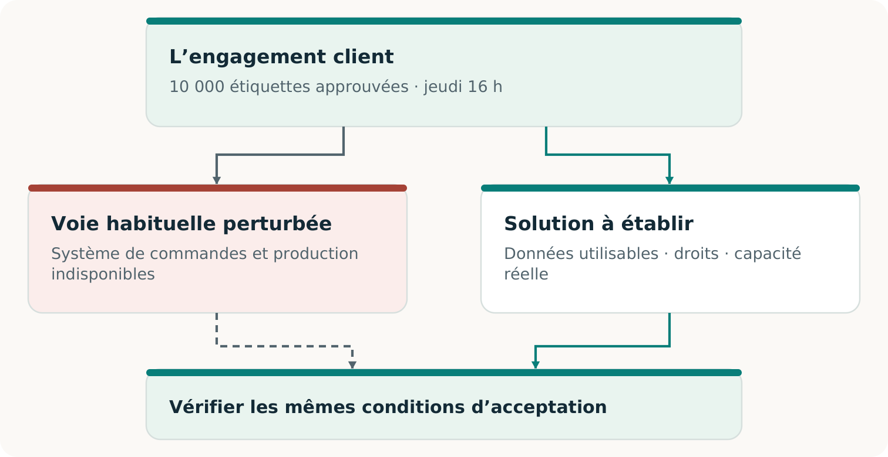
Deux voies possibles, un engagement client. Les exigences initiales restent la référence pour l’acceptation.
La relève exige la commande et le visuel à jour, la permission de les utiliser, une production compatible, un créneau réellement disponible et une livraison à temps. Le transfert doit aussi éviter une production en double au retour du système initial. [C2, pp. 11–14]
L’économie de la continuité
Rendre la relève intéressante à fournir
Un imprimeur disposant d’équipements libres et un acheteur inquiet d’une interruption n’ont pas automatiquement un service utilisable. Il faut préparer le travail, réserver une capacité exploitable, vérifier la prestation et financer chaque étape. [C2, pp. 18–20]
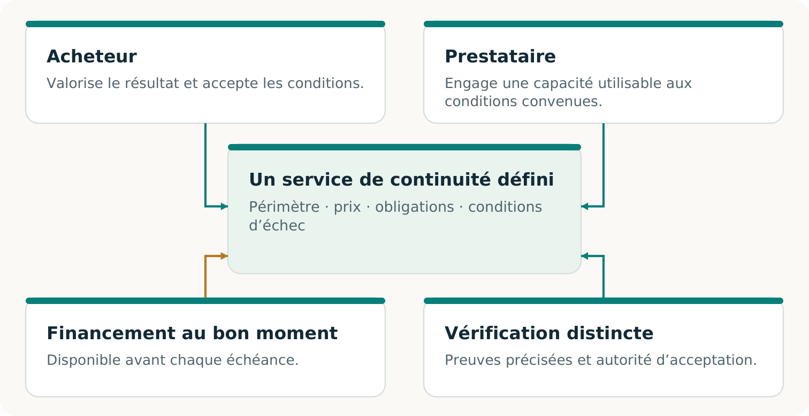
Un service de continuité proposé relie une capacité utile à des responsabilités, une capacité réservée, une acceptation et des paiements réellement convenus.
CONTINUITÉ Ω explore ensemble la voie technique et cet arrangement. Un dossier de production transférable peut rendre un créneau réservé utile; une réservation acceptée peut justifier la préparation du dossier. Aucun des deux ne suffit nécessairement seul.
Mutualiser la préparation peut réduire le coût. La capacité doit encore couvrir les activations simultanées, et les fonds être disponibles à temps. Les achats réels et la réutilisation constituent des preuves distinctes. [C2, pp. 19–20; F2, p. 3]
Trois questions et trois types de preuves
Savoir à quoi accorder sa confiance
L’engagement a-t-il été tenu?
Le travail respecte la quantité, la qualité, le délai et les critères d’acceptation convenus. Un résultat logiciel accepté étaye un résultat logiciel; une livraison physique exige sa propre observation.
L’arrangement fonctionne-t-il?
Consentement, droits, capacité, incitations et financement s’articulent. Un modèle teste des hypothèses fournies; une préparation réelle exige des preuves concernant les participants réels.
Existe-t-il un marché viable?
Des parties réelles choisissent l’offre, une valeur acceptée est livrée, le paiement est encaissé et les coûts complets sont comptés. D’autres adoptions ou renouvellements étayent la répétabilité. [C2, pp. 8, 14, 18–22; F2, p. 3]
« Vérifiée de manière indépendante » devrait préciser qui a vérifié, quelles pièces ont été examinées et comment le contrôle était séparé de la production du résultat. Une seconde IA ou un programme distinct peut révéler des erreurs; les liens et hypothèses communes restants doivent demeurer visibles. [C2, pp. 6, 14, 24–25]
Poursuivre la lecture
Le volume 02 développe l’histoire et les idées. Le volume 03 prépare un pilote délimité, et le volume 04 aide à consigner les décisions. Le volume 05 présente l’examen daté des preuves : recherche, exécutions logicielles et affirmations exigeant encore un appui réel.
Les résultats du dépôt renvoient aux essais sources conservés. Cette édition éditoriale ne rapporte aucun nouvel essai sur le terrain ni certification externe.
VOLUME 02
L’histoire et la méthode
De la commande interrompue à une solution de livraison viable
Partir de ce que la défaillance change pour le client
Un client qui attend une livraison a besoin des bons produits à temps. Le redémarrage d’un serveur compte parce qu’il peut contribuer à ce résultat. Il ne permet pas, à lui seul, de savoir si la commande est correcte, si les produits peuvent être fabriqués ou si le client les recevra.
CONTINUITÉ Ω est un projet pour aider une entreprise à tenir un engagement client précis lorsque sa voie habituelle est perturbée. Il étudie ce dont dépend cet engagement, aide à construire les moyens manquants et vérifie si l’arrangement obtenu peut livrer le résultat convenu. [C2, pp. 5–9]
Ce point de départ ouvre un espace d’invention. Une application indisponible pourrait être restaurée. Un dossier protégé pourrait permettre le travail sans elle. Un partenaire qualifié pourrait produire la commande pendant la reprise du site initial. Chaque option mérite le même contrôle du résultat.
L’ambition plus large
La planification de la continuité utilise déjà des solutions de rechange, des exercices et des preuves de reprise. L’ambition de recherche consiste ici à intégrer leur découverte et leur construction à des arrangements commerciaux volontaires, puis à apprendre quelles capacités conservées améliorent d’autres travaux. Un service conventionnel compétent peut légitimement l’emporter. [C2, pp. 6, 18–23]
Les pages suivantes suivent une commande d’imprimerie fictive dans ce raisonnement. Elles expliquent l’opportunité et les preuves nécessaires pour la poursuivre. Les volumes pratiques transforment ensuite ce même cas en pilote et en documents de travail modifiables.
L’engagement de l’imprimeur pour jeudi
Retrouver la commande acceptée par le client
Ce cas suivi est inventé à des fins pédagogiques. Ses quantités, horaires et montants ne sont ni des clients, ni des mesures, ni des prix réels rapportés. Le lieu et le fuseau horaire convenus font partie de l’engagement fictif.
La commande acceptée
Livrer 10 000 étiquettes approuvées, avec le visuel v3, au plus tard jeudi à 16 h au lieu convenu.
Le dossier restauré
Après l’incident, le carnet de commandes récupéré indique 8 000 étiquettes.
La modification conservée
Un enregistrement authentifié, conservé hors de la vue restaurée, atteste une augmentation acceptée de 2 000 étiquettes.
Un processus vérifiant seulement l’ouverture de l’application pourrait manquer l’écart. Une comparaison attentive avec la modification conservée le révèle. Les 2 000 étiquettes manquantes appartiennent à la commande acceptée; elles ne sont pas une production supplémentaire facultative.
Voilà pourquoi l’origine des preuves compte. Si aucun enregistrement disponible ne distingue l’historique de 8 000 étiquettes de celui de 10 000, un autre examinateur ne peut déterminer lequel s’est produit. La solution peut être un accusé de réception protégé ou une meilleure conservation des dossiers. [C2, pp. 9–10]
Un rapprochement ordinaire peut aussi trouver cette omission. CONTINUITÉ Ω doit démontrer sa valeur ajoutée par la solution complète qu’il aide à construire, le travail économisé ou le résultat rendu possible, en donnant à la méthode conventionnelle les mêmes preuves. [C2, pp. 21–22]
De l’objection à une meilleure solution
Donner un rôle utile au second regard
Une IA peut proposer un plan; une autre peut rechercher les omissions importantes. Poser une question précise : La commande récupérée conserve-t-elle chaque modification acceptée jusqu’à la limite convenue? Ici, l’objection utile désigne l’ajout manquant de 2 000 étiquettes et son effet sur la livraison.
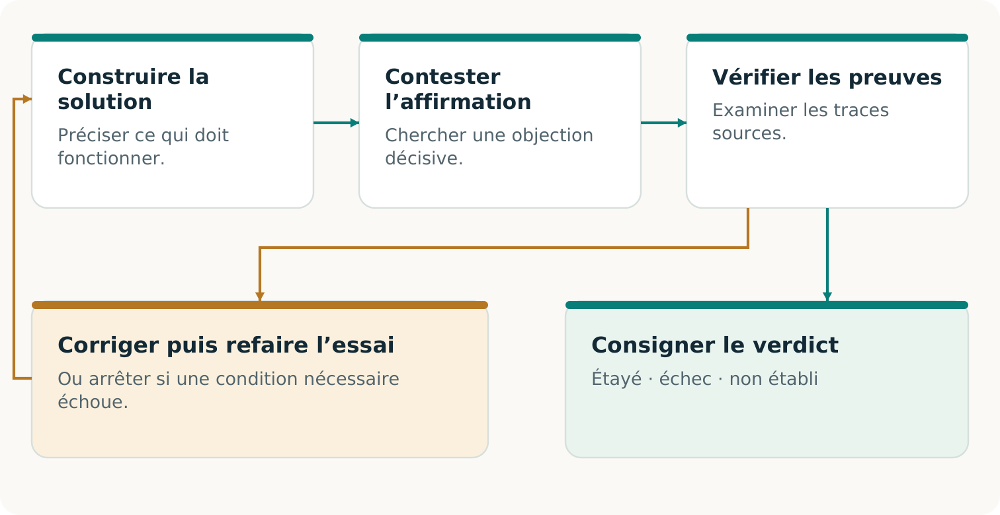
Une objection devient utile lorsque les preuves permettent de la trancher et que toute correction est vérifiée selon l’engagement initial. Elle peut aussi être rejetée ou rester non résolue.
L’examinateur a besoin de la source, au-delà du résumé initial. Son objection précise une exigence importante, une défaillance plausible et un moyen de vérifier l’allégation. L’assurance d’un second modèle ne décide pas du résultat. [C2, pp. 5–6, 10–11]
L’intelligence transformationnelle en pratique
Changer les moyens en préservant l’entente
La question initiale pourrait être : « Comment redémarrer cette usine avant jeudi? » L’objectif autorisé du client peut permettre une question plus large : « Comment livrer les étiquettes approuvées au plus tard jeudi à 16 h? » [C2, p. 5; F1, pp. 2–3]
Rétablir la voie habituelle et construire une relève autorisée sont deux moyens possibles de respecter le même engagement.
Le changement transformationnel consiste à examiner si une façon de travailler héritée limite inutilement le résultat. Construire un autre chemin d’information, procédé ou arrangement de coopération lorsqu’il améliore le résultat complet. Conserver la meilleure voie existante comme élément de comparaison.
Rendre l’obligation transférable
Donner au prochain prestataire un dossier exploitable
L’imprimeur de relève ne peut travailler à partir de « Terminez notre commande urgente ». Il lui faut une information fiable et une autorité suffisantes pour produire le même résultat approuvé. Construire cette transmission exploitable constitue déjà une capacité. [C2, pp. 11–12]
Décrire le travail
L’obligation actuelle de 10 000 étiquettes, le visuel v3, la matière et la qualité approuvées, les modalités de livraison et l’échéance.
Autoriser le travail
Les droits d’utilisation nécessaires, les données dont le partage est permis, l’autorité de lancement et un moyen authentifié d’activer la voie convenue.
Refermer la boucle
Des identifiants de commande stables, modifications, annulations et reçus qui évitent une production ou une facturation en double au retour des opérations habituelles.
La transférabilité préserve le sens. Une conversion de fichier réussit si le prochain prestataire reçoit la bonne spécification et peut l’utiliser dans les conditions convenues. Un bel aperçu ne remplace pas un fichier de production réellement utilisable par les équipements et les opérateurs.
Un dossier restreint et suffisant
Transmettre l’information approuvée nécessaire par la voie permise. Copier tout l’environnement affecté peut accroître l’exposition sans aider la production. Versions actuelles, accès délimités et procédure de révocation joignable comptent, car un dossier auparavant valide peut devenir inadapté.
Le cas passe ainsi d’un dossier corrigé à une voie opérationnelle possible. Il reste à déterminer si cette voie sera utilisable lors de la perturbation, quand d’autres clients en auront également besoin. [C2, pp. 11–14]
Dépendances et capacité limitée
Vérifier que la relève évite la défaillance réelle
Un second imprimeur peut dépendre du même accès défaillant, de la même matière ou du même transport. Un autre nom de fournisseur ne crée pas à lui seul une voie utilisable. Toute la solution doit résister à la perturbation revendiquée. [C2, pp. 11–12]
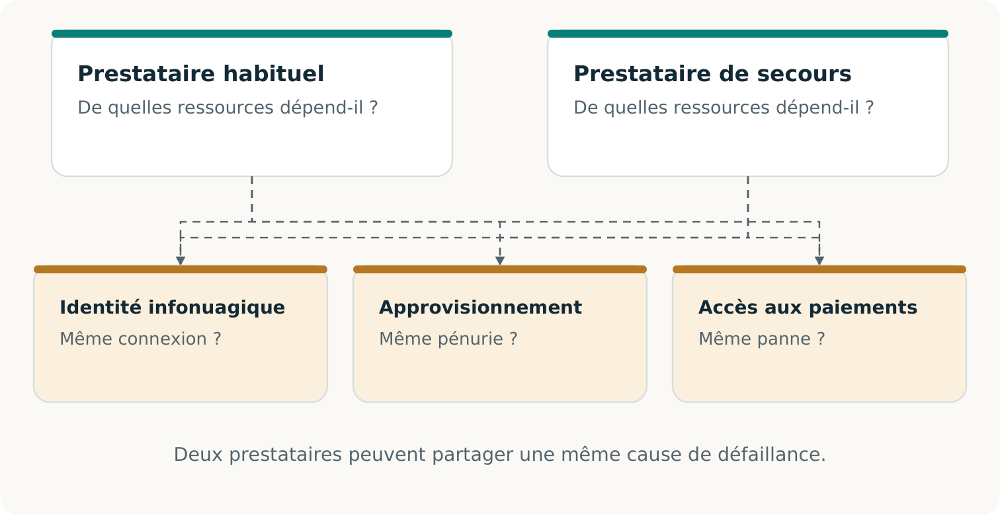
Examiner toute la voie, y compris les prérequis partagés. Une dépendance commune indisponible peut arrêter toutes les solutions de rechange apparentes.
Dans notre cas fictif, le créneau de relève offre 12 000 unités exploitables. Des travaux antérieurs protégés en exigent 2 000. Il reste exactement 10 000 unités pour notre commande. Une autre demande simultanée de 5 000 ne tient pas sans modifier l’arrangement.
Appliquer « Inventer l’économie » à la continuité
Créer un arrangement que les participants choisissent
L’acheteur veut un résultat fiable; le prestataire, une rémunération pour la capacité et les obligations. Préparation, contrôle et livraison doivent être financés. CONTINUITÉ Ω explore ensemble la capacité et cet arrangement volontaire. [C2, pp. 18–20; F2, pp. 2–3]
Les pièces techniques et commerciales doivent s’articuler. Consentement, solutions de rechange, obligations et financement déterminent si le service proposé est utilisable.
Montants fictifs en dollars canadiens : achat distinct du service de continuité par l’imprimeur principal, hors facture initiale du client final. Un devis de 5 600 $ face à un coût complet estimé de 5 000 $ suggère une contribution projetée de 600 $. Mais 4 700 $ sont dus avant l’acceptation et seuls 1 200 $ sont disponibles : il manque 3 500 $.
Trois réalisations qui peuvent progresser ensemble
Distinguer une voie réalisable d’un marché démontré
Un bon service de continuité réunit un résultat accepté et un arrangement que les participants peuvent maintenir. Ces réalisations sont liées, mais répondent à des questions différentes. Les rendre visibles aide l’acheteur à savoir ce qu’il achète et le prestataire à savoir ce qu’il a gagné.
Résultat
Le travail respecte-t-il les exigences initiales? Pour notre commande, il faudrait établir les étiquettes convenues, la quantité, la qualité, le délai et l’acceptation. Un exercice logiciel établit seulement le résultat logiciel effectivement mis à l’épreuve.
Faisabilité du service
L’arrangement est-il exécutable dans ses conditions déclarées? Consentement, droits, capacité simultanée, incitations, coûts complets et calendrier de financement doivent s’articuler. Un modèle fourni établit un calcul conditionnel; une préparation réelle exige des preuves réelles.
Preuve commerciale
Des participants réels acceptent-ils les modalités et reçoivent-ils la valeur promise? Consigner livraison acceptée, paiement encaissé, coûts complets de campagne et obligations restantes. D’autres adoptions ou renouvellements indépendants sont nécessaires pour étayer la répétabilité. [C2, pp. 8, 18–22; F2, p. 3]
Une nouvelle possibilité économique pourrait émerger ici. Une entreprise qui ne peut justifier une usine en double pourrait trouver une relève qualifiée et maintenue intéressante. Un prestataire pourrait aussi trouver intérêt à servir ces engagements. Leur arrangement préféré doit encore dépasser leurs solutions de rechange crédibles et rester réalisable lorsque les demandes arrivent ensemble.
Le volume 05 présente l’état daté des preuves existantes. Il distingue la recherche initiale, les travaux logiciels locaux ultérieurs et les observations supplémentaires nécessaires aux affirmations opérationnelles ou commerciales.
Le Passeport de continuité
Rendre le résultat facile à examiner et à utiliser
Le Passeport de continuité consigne l’engagement, l’exercice, les observations et les conditions de recontrôle. Il facilite la prochaine décision. [C2, pp. 14–15]
Rubrique
Ce dont le lecteur a besoin
Engagement
Destinataire, résultat, quantité, qualité, échéance, permissions et autorité d’acceptation.
Garde des sources, vérificateur, méthode, lien au producteur et hypothèses de confiance.
État et validité
Modalités et état de la capacité; factures ou encaissements; coûts, obligations, expiration, révocation et motifs de nouvelle vérification.
Préciser l’indépendance
Une garde distincte des sources peut protéger la référence. Un contrôle programmé séparément peut révéler une erreur de code commune. Un évaluateur externe peut ajouter une séparation organisationnelle. Ces mesures répondent à des risques différents. Une autre IA ou un chemin de code dans le même projet ne fournissent pas automatiquement une assurance externe. [C2, pp. 6, 9–10, 14, 24–25]
Le rapprochement peut être démontré sans établir la livraison physique. Un refus correct peut réussir un test de sûreté alors que l’engagement complet échoue. Une nouvelle vérification examine les preuves actuelles; un Passeport sauvegardé décrit le passé. [C2, pp. 14–15; R1; R3]
Le lien avec ALPHA GENESIS FLYWHEEL Ω
Utiliser une capacité pour en rendre une autre possible
Les progrès de l’IA peuvent rendre de nouveaux outils praticables. Supposons qu’un exercice réel accepté produise un adaptateur, une méthode de contrôle et leurs conditions de validité. Un autre procédé pourrait bénéficier de cet héritage, ou révéler l’échec du transfert. [C2, p. 23]
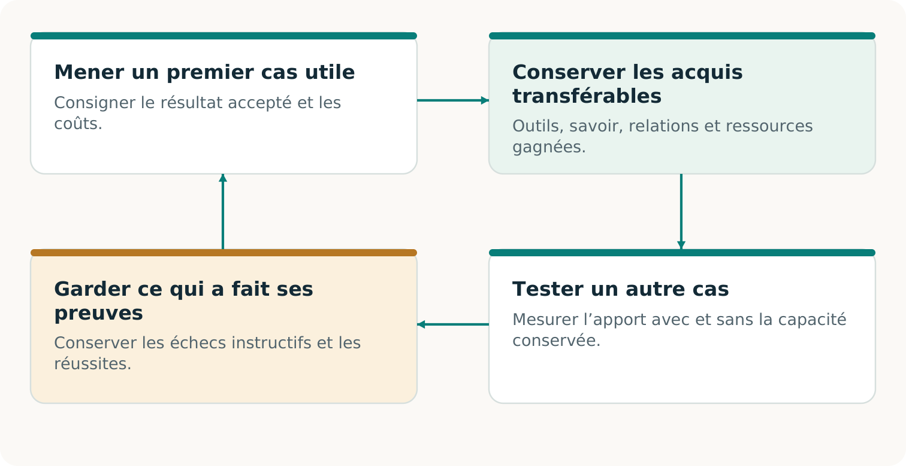
Cycle d’apprentissage proposé : conserver une capacité qualifiée, tester son apport à un travail nouveau et différent, puis utiliser le résultat observé pour améliorer la décision suivante.
ALPHA GENESIS FLYWHEEL Ω demande si la construction validée aujourd’hui améliore ce qui peut être construit ensuite. Trois gains exigent des preuves distinctes : des gains financent la poursuite; les moyens hérités aident une nouvelle tâche; une procédure de découverte améliorée réussit mieux sur de nouvelles campagnes. [F3, pp. 3, 8, 20]
De la compréhension à un premier exercice utile
Choisir un engagement à préserver
Le point de départ est un engagement important, assorti d’une décision d’acceptation claire. Il est assez délimité pour être étudié de façon responsable et assez important pour que sa préservation compte. Le cas de l’imprimeur fournit un raisonnement; votre engagement réel fournit les exigences.
Nommer le résultat. Que doit recevoir qui, à quelle qualité, pour quand, et qui peut l’accepter? Inclure les pièces et permissions qui donnent autorité à ces modalités.
Trouver l’obstacle réel. Comparer les meilleures voies complètes disponibles. Déterminer si le blocage tient à l’information, à la compatibilité technique, à la capacité, au consentement, au financement ou à leur combinaison.
Choisir une observation décisive. Identifier le test qui pourrait modifier la décision. Convenir de son périmètre, de ses ressources et de ses conditions d’exécution sûres avant de le réaliser. [C2, pp. 21–22]
Garder le choix ouvert
Utiliser un service existant s’il fournit le meilleur résultat complet. Construire une capacité manquante si sa valeur prospective justifie le travail. Arrêter ou réviser si les preuves ou l’économie ne soutiennent pas la prochaine étape. Une méthode utile doit reconnaître ces trois possibilités.
Poursuivre avec les volumes de travail
Le volume 03 développe le pilote autour de la même commande fictive. Le volume 04 fournit des fiches modifiables pour l’engagement réel, les participants, la capacité, les preuves et l’économie. Le volume 05 indique les affirmations étayées à sa version de source et celles qui exigent d’autres observations.
L’ambition est concrète : rendre une activité importante possible grâce à un arrangement réalisable, démontrer sa valeur et conserver ce qui aidera à tenir un autre engagement. [C2, pp. 23–25]
Les résultats du dépôt renvoient aux essais sources conservés. Cette édition éditoriale ne rapporte aucun nouvel essai sur le terrain ni certification externe.
VOLUME 03
Réaliser le pilote
Une promesse. Une voie utilisable. Un résultat acceptable.
Un pilote utile répond à une question concrète : ce client peut-il recevoir le résultat convenu, à temps, lorsque la voie habituelle est indisponible? Partir de l’acceptation. Identifier les documents, droits, capacités et fonds manquants; construire la solution autorisée; puis éprouver le résultat. [C2, pp. 5–9]
Qui achète?
L’imprimeur touché achète un service de continuité délimité. Son client reste le bénéficiaire de la commande initiale.
Qui livre et qui vérifie?
Un imprimeur de relève qualifié réalise le travail; l’autorité nommée décide si le résultat respecte les conditions initiales.
Qui coordonne?
Le responsable du pilote réunit autorisations, réservations, preuves et financement; chaque obligation restante a un titulaire.
Cette démarche de terrain est proposée, sans déploiement rapporté. Le premier pilote réel du dépôt reste lui aussi une proposition sans approbations réelles. Le cahier complémentaire transforme chaque hypothèse en condition acceptée, observation ou lacune visible. [R6]
Livrable 1 · Une fiche de promesse faisant autorité
Convenir de ce qui constituera la réussite
Le responsable des opérations prépare la fiche; le dirigeant habilité et l’autorité d’acceptation en arrêtent les conditions. Reprendre l’engagement existant avec ses modifications et annulations. Ne pas inventer un objectif plus commode pour le pilote. La fiche A sert de dossier de travail. [C2, pp. 7–9; R6]
À fixer
Cas illustratif / décision nécessaire
Résultat
10 000 étiquettes selon le visuel v3 et les matériaux, dimensions et tolérances de qualité approuvés.
Heure et lieu
Réception et acceptation jeudi à 16 h, America/Toronto, au lieu convenu; ajouter la date réelle.
Perturbation déclarée
Préciser les systèmes ou étapes de production indisponibles dans l’exercice contrôlé.
Acceptation
Nommer la personne habilitée, la méthode, les preuves et le traitement des résultats partiels ou défectueux.
Pouvoirs et limites
Préciser données, participants, interventions, autorité d’arrêt et exclusions.
Choisir l’affirmation avant de choisir l’essai
Une simulation sur table peut établir la préparation. Un exercice de production peut inclure des biens réels et leur acceptation client. Un substitut étaye uniquement l’affirmation d’exercice expressément convenue. Distinguer le temps de reprise du délai client : un serveur redémarré ou un colis expédié ne prouve pas une livraison acceptée. [C2, pp. 7–9; R6]
Prêt à poursuivre : les autorités nommées ont accepté version, périmètre et règle d’acceptation. Sinon : conserver le projet et résoudre la décision précise qui manque.
Livrable 2 · Une obligation fiable et un dossier utilisable
Retrouver ce que la sauvegarde a oublié
Le dépositaire obtient l’historique accepté jusqu’à la borne convenue. L’évaluateur retrouve la modification : 8 000 + 2 000 = 10 000 étiquettes. En produire 8 000 manquerait la promesse. [C2, pp. 9–12]
Vérifier l’objection, trancher sur preuves, corriger et réexaminer la promesse initiale.
Le prestataire reçoit visuel approuvé, spécifications, droits, quantité, échéance, destination et pouvoir de lancement. Identifiants stables et annulations préviennent doublons et doubles facturations. Utiliser B à D. [C2, pp. 11–12]
Poursuivre avec des dossiers étayés et utilisables légalement. Preuve décisive absente : NON ÉTABLI. Une empreinte ne prouve pas l’exhaustivité. [C2, pp. 9–10, 14]
Livrable 3 · Un arrangement complet et acceptable
Transformer l’intérêt en réservation utilisable
Demander à chacun sa contribution, sa contrepartie et les preuves rendant l’engagement utilisable. Un imprimeur volontaire sans créneau, un créneau sans visuel approuvé ou un acheteur sans pouvoir d’activation laissent la voie incomplète. Les fiches B et C réunissent ces compléments. [C2, pp. 11–13, 18–19]
Participant
Engagement nécessaire au pilote
Imprimeur acheteur
Service accepté, informations permises, pouvoir d’activation et conditions de paiement.
Imprimeur de relève
Procédé qualifié, matériaux, créneau précis, confirmation et conditions d’échec ou de retrait.
Client final
Spécification applicable, droits nécessaires et autorité d’acceptation nommée.
Coordination et évaluation
Responsabilités, contrôles, honoraires et liens déclarés; aucune prime au verdict favorable.
Vérifier réglages, séquence, matériaux, personnel, qualité, transport et demande simultanée. Identifier les dépendances communes à la voie défaillante ou aux autres acheteurs. Obtenir la confirmation réelle du prestataire et vérifier ce qu’inclut son registre. Un tableau local ne révèle pas les réservations non divulguées. [C2, pp. 11–13]
Prêt à poursuivre : les parties ont accepté un arrangement complet, actuel et étayé quant à sa capacité. Sinon : ajouter une capacité qualifiée, modifier l’arrangement proposé avec consentement ou conserver la limite. Comparer chaque voie à la même promesse client.
Livrable 4 · Un coût complet et des échéances financées
Combler le déficit de trésorerie avant d’engager
Le coordinateur finance le service de continuité distinct acheté par l’imprimeur. La facture initiale au client final reste hors de l’exemple. Tous ces montants, en dollars canadiens, sont inventés. [C2, pp. 18–20]
Coût illustratif
CAD
Prospection, préparation et coordination
1 200
Créneau de production réservé
700
Production, transport et vérification distincte
2 800
Suivi et rapprochement
150
Provision indicative pour imprévus
150
Coût complet modélisé
5 000
Un prix proposé de 5 600 CAD laisse 600 CAD de contribution modélisée, sans encaissement ni bénéfice réalisé. Les imprévus restent estimatifs, sans plafond des responsabilités.
Corrections possibles : paiements par étapes acceptés, fonds de roulement autorisés ou voie complète moins chère. Recalculer dépôts remboursables et obligations protégées. E et F conservent le plan échoué et les conditions révisées. [C2, pp. 19–20]
Poursuivre avec accords et fonds couvrant paiements et scénarios d’échec. Inclure ressources du cycle complet, échecs et devoirs restants; signaler les coûts inconnus. [R6]
Livrable 5 · Une comparaison qui peut changer le choix
Laisser concourir la meilleure voie complète
L’arrangement améliore-t-il assez le résultat complet pour justifier son choix? Donner aux solutions capables la même promesse, les dossiers pertinents, les droits, les possibilités de ressources et les critères d’acceptation. Un prestataire conventionnel peut construire le même dossier transférable et le même accord de capacité. [C2, pp. 19–22]
Solution
Ce qu’il faut comparer
Prestataire actuel ou réalisation interne
Une reprise et une fabrication de relève compétentes, coordination, réservations et contrôles compris.
Assistance directe par IA
Si accessible et autorisée, une IA utilisée directement avec intrants et budgets totaux équivalents.
Voie CONTINUITÉ Ω
Critique explicite, examen des preuves et construction; compter effort supplémentaire et résultat utile.
Absence d’achat
L’acheteur peut rationnellement conserver sa solution actuelle. Consigner sa décision réelle et ses raisons.
Adapter la preuve à la comparaison
Un devis compare des conditions proposées. Un exercice comparable mesure une exécution observée. Aucun n’établit seul une supériorité générale. Fixer la méthode avant l’essai; distinguer les solutions exécutées, seulement chiffrées ou indisponibles. Ne pas compter une solution non exécutée comme un échec. [C2, pp. 21–22]
Mesurer résultat correct accepté à temps, omissions, doublons, défauts, points non résolus, travail humain, divulgations permises, coût total et besoin de financement. Inclure interventions et échecs. Si l’exercice utilise un substitut, comparer les substituts; réserver la livraison physique aux biens réellement acceptés. [R6]
Livrable 6 · Un déroulement traçable et une acceptation distincte
Exécuter le travail et consigner les passages de relais
Commencer l’opération convenue lorsque pouvoirs, sources, capacité et financement sont prêts. Le premier pilote proposé est isolé et non destructif. Un exercice de production peut fabriquer et livrer de vraies étiquettes sans lancer d’attaque ni saboter les systèmes. La fiche G suit son déroulement. [R6]
Responsable d’exercice : consigner début, versions et dépendances indisponibles. Maintenir les canaux d’arrêt et de contact. Noter toute intervention extérieure à la voie déclarée.
Dépositaire et prestataire : transmettre le dossier autorisé, confirmer la commande et vérifier que créneau réservé et intrants restent disponibles.
Prestataire et évaluateur : réaliser production et contrôles autorisés; conserver quantités, observations de qualité, heures, défauts, reprises et preuves de transport.
Autorité d’acceptation client : consigner réception puis acceptation ou refus selon spécification et échéance fixées. L’expédition ne suffit pas.
Coordinateur : distinguer acceptation, factures, encaissements, coûts, remboursements et devoirs résiduels. Émettre une facture ne crée pas son paiement.
Si la voie principale ou une personne non prévue sauve la commande, consigner cette aide. La livraison client peut réussir tandis que l’indépendance annoncée vis-à-vis de cette ressource échoue. Sans travail physique effectué, la livraison réelle reste NON ÉTABLIE. [C2, pp. 8–9, 22; R6]
Prêt à conclure : l’autorité habilitée peut examiner ce qui s’est produit, y compris les preuves défavorables et tous les écarts importants au plan.
Livrables 7–8 · Un Passeport et une suite qualifiée
Clore par une décision utile
La fiche H distingue résultat, faisabilité du service complet et preuves de marché. Chaque affirmation reçoit DÉMONTRÉ, ÉCHEC ou NON ÉTABLI dans sa portée déclarée. Consigner vérificateur, méthode, sources, liens, limites et changements imposant un nouvel examen. Une autre IA ne crée ni source indépendante ni certification tierce. [C2, pp. 13–15]
Le plan de trésorerie échoue : il manque 3 500 CAD avant acceptation.
Résultat client
NON ÉTABLI : l’exemple s’arrête avant l’exécution physique.
Preuves de marché
NON ÉTABLI : aucun achat, livraison ou encaissement réel n’est rapporté.
Le résultat indique ce qu’il faut construire : un arrangement financé et volontairement accepté, ou une meilleure voie complète. Garder le plan échoué. Lorsque les nouvelles conditions sont réellement obtenues, revérifier la promesse initiale avant l’exécution. Les chiffres fictifs ne prouvent aucune disposition à payer. [C2, pp. 18–22]
Conserver ce qui pourrait servir une autre promesse
Un schéma de commande, adaptateur, mécanisme de réservation ou vérificateur utile se conserve avec ses droits, prérequis, coûts et échecs connus. La fiche I évalue son aide à une tâche nouvelle distincte face à la meilleure voie complète sans lui. Égaliser les ressources initiales et compter la requalification. [C2, pp. 23–24]
Les résultats du dépôt renvoient aux essais sources conservés. Cette édition éditoriale ne rapporte aucun nouvel essai sur le terrain ni certification externe.
VOLUME 04
Cahier du pilote
Transformer les hypothèses en accords, observations et décisions
Utiliser un cahier par promesse client et par exercice. Saisir les faits connus, nommer les lacunes et référencer les preuves. Un champ vide signifie inconnu ou non saisi, jamais coût nul, consentement ou réussite. Ces dossiers ne créent ni autorisation, ni réservation, ni certification. [C2, pp. 7–9, 13–14]
Préparer · A à D
Fixer la promesse, convenir des contributions et qualifier capacité et sources.
Financer et exécuter · E à G
Chiffrer le service complet, résoudre la trésorerie et consigner l’opération autorisée.
Décider et réutiliser · H à I
Émettre un Passeport délimité, conserver les changements et éprouver une nouvelle possibilité.
Identifier ce cahier
Identifiant du pilote; responsable; version; date de préparation; emplacement sécurisé de l’index des preuves.
Utiliser des identifiants stables, comme COMMANDE-01 ou RÉSERVATION-01, pour les pièces conservées à leur emplacement autorisé. Dupliquer les blocs au besoin. Préserver versions, échecs et promesse initiale. Ne pas déposer de sources confidentielles dans un dépôt public. [R6]
À remplir avec le responsable et l’autorité d’acceptation
A · La fiche de promesse
À qui appartient cette promesse?
Identifiant/version; acheteur; bénéficiaire; responsable; accord source et preuve d’approbation.
Que doit recevoir le client?
Reprendre le résultat réel, la spécification/version, la quantité, la qualité, les tolérances et toute livraison partielle permise.
Quelles perturbations et interventions sont permises?
Dépendances indisponibles; type d’exercice; actions et données autorisées; dégradation tolérée; exclusions; autorité d’arrêt.
Qui accepte, à partir de quelles preuves?
Autorité nommée; inspection et mesures; critères; preuves manquantes; biens réels ou substitut expressément convenu.
Obtenir les références d’approbation réelles avant de poursuivre. Modifier ces conditions crée une version nouvelle, sans changer le verdict concernant la promesse antérieure. [C2, pp. 7–9; R6]
Rendre explicites contribution, contrepartie et décision
B · L’arrangement que chacun peut accepter
L’imprimeur acheteur acquiert le service de continuité; son client reçoit la commande initiale. Identifier les engagements rendant cet échange utilisable. Tout cumul de rôles exige d’en déclarer les liens. [C2, p. 18]
Participant
Contribution et contrepartie
Personne / preuve
Imprimeur acheteur
________
________
Prestataire de relève
________
________
Client final
________
________
Coordinateur
________
________
Évaluateur
________
________
Qu’achète exactement l’entreprise?
Préparation, réservation, activation ou combinaison définie; prix/périmètre; exclusions; meilleure solution complète et décision réelle.
Qu’a réellement accepté chaque partie?
Autorité; contribution/contrepartie; en attente, accepté, refusé ou retiré; preuve/date; expiration et conditions. Joindre une trace par partie.
Quels engagements concurrents échappent à cette vue?
Périmètre du registre; demandes simultanées et autres clients; informations indisponibles; responsable et prochain contrôle.
Vérifier chaque ressource limitante et chaque intervalle. Un calcul local ne révèle pas les réservations cachées et ne remplace pas l’engagement du prestataire. Maintenir visible toute capacité non qualifiée. [C2, pp. 11–13; R6]
Rendre l’écart important vérifiable
D · Des preuves accessibles pendant la perturbation
Source / version
Garde, origine et emplacement
Borne, couverture et lacune
________
________
________
________
________
________
________
________
________
Qu’est-ce qui pourrait changer le respect de la promesse?
Identifiant de l’objection; affirmation initiale; omission alléguée; condition touchée; évaluateur et date.
Quelle observation permettrait de trancher?
Sources; vérification ou réexécution autorisée; écart attendu/observé; emplacement des preuves; témoin positif.
Qu’a-t-on décidé et corrigé?
Étayé, rejeté ou non résolu; décideur et motif; correction autorisée; version revérifiée; lacune résiduelle et coût.
Dupliquer le bloc pour commandes manquantes, modifications périmées, annulations, doublons, conflits de réservation ou autres enjeux. Mettre aussi le vérificateur à l’épreuve. Conserver les échecs. Sans source décisive, inscrire NON ÉTABLI sans fabriquer de certitude. [C2, pp. 9–10, 14–17; R6]
Compter chaque ressource une fois; signaler les inconnues
E · Chiffrer le service complet
Les coûts de qui, sur quelle période?
Entité, promesse/version, devise, période, travail interne et affectation des coûts; distinguer réel, estimé et inconnu.
Groupe de coûts
Montant / état
Preuve / échéance
Prospection, préparation, personnel et offres refusées
________
________
Données, droits, IA et mise en place technique
________
________
Réservation et coûts d’opportunité
________
________
Matériaux, production et contrôle qualité
________
________
Transport, acceptation et vérification distincte
________
________
Exercices, nouveaux essais et requalification
________
________
Soutien, financement, assurance et devoirs juridiques
________
________
Remboursements, devoirs restants, taxes et autres
________
________
Total, estimations et lacunes identifiées
________
________
Quels prix et choix d’achat sont étayés?
Prix proposé ou accepté; meilleure solution complète; contraintes de l’acheteur; coûts mesurés et incertitudes; encaissements distincts.
Une provision estimative ne plafonne pas les responsabilités. Inclure les échecs sans doubler les ressources. Reporter échéances et obligations protégées dans F. [C2, pp. 18–20; R6]
Vérifier les fonds avant que la décision crée une obligation
F · Financer le prochain engagement
Quels fonds sont réellement disponibles?
Entité, devise, trésorerie initiale, obligations protégées, fonds affectés et preuves des comptes autorisés. Indiquer projet ou suivi réel.
Étape / date
Entrées reçues
Sorties payées
Réserve requise
Fonds disponibles
Préparation
________
________
________
________
Réservation
________
________
________
________
Production / contrôles
________
________
________
________
Acceptation / encaissement
________
________
________
________
Suivi / devoirs restants
________
________
________
________
Fonds disponibles = trésorerie initiale + encaissements effectifs cumulés − décaissements cumulés − fonds encore protégés. Garder le même périmètre; retirer les devoirs payés de la réserve. Les recettes prévues ne sont jamais des encaissements réels. [C2, pp. 19–20]
Que faudra-t-il payer si la situation se dégrade?
Réservation ou prépaiement; retard client; remboursement, reprise ou retrait; financement nommé et preuve.
Quelle révision finance la prochaine étape?
Paiements par étapes acceptés, fonds de roulement autorisés ou voie moins chère; restrictions des dépôts; décideur, date et preuve. Garder le plan échoué.
Un dossier des actions, passages de relais et interventions
G · Le suivi de l’exécution
Utiliser cette fiche dans le périmètre autorisé. Un exercice de production peut livrer de vrais biens; une simulation sur table ou un substitut n’étaye que ses opérations. Préserver l’horloge initiale et consigner les aides imprévues. [R6]
Qu’est-ce qui est autorisé à démarrer?
Promesse/version, approbations, borne des sources, ressources, début, dépendances indisponibles, autorité d’arrêt et contact.
Passage de relais
Responsable / preuve prévus
Heure / résultat / problème réels
Transmettre le dossier actuel
________
________
Confirmer les intrants réservés
________
________
Produire et inspecter
________
________
Transporter et recevoir
________
________
Accepter ou refuser
________
________
Quelle comparaison a réellement été faite?
Solution complète solide; promesse/ressources comparables; devis ou exécution; méthode, mesures, travail humain et coûts. Indiquer NON EXÉCUTÉ si nécessaire.
Que s’est-il passé hors de la voie prévue?
Secours par les systèmes ou personnes initiaux, écarts, défauts, refus, arrêts et corrections; affirmation touchée; décision et preuves.
Dire précisément au prochain lecteur ce qui est établi
H · Le Passeport de continuité
Affirmation
Verdict
Preuve / limite
Rapprochement des dossiers
________
________
Préparation de la relève
________
________
Résultat convenu accepté
________
________
Faisabilité du service complet
________
________
Preuves commerciales
________
________
Choisir DÉMONTRÉ, ÉCHEC ou NON ÉTABLI par affirmation. Un substitut étaye seulement l’exercice convenu. Une livraison réelle exige des biens réellement reçus et acceptés. Payer les préparatifs établit cet achat seulement; facturer n’est pas encaisser. [C2, pp. 8, 13–14]
Qu’a réellement accepté le client?
Livraison réelle : biens, spécification, quantité, qualité, heures, autorité nommée et preuve authentifiée. Identifier séparément tout résultat d’exercice avec substitut.
Qui a vérifié, avec quelle indépendance?
Vérificateur et méthode; garde des sources; contrôle d’exécution; liens organisationnels/commerciaux; hypothèses et lacunes.
Où ce Passeport s’applique-t-il, et jusqu’à quand?
Promesse/version, perturbation, installation/période, exclusions, fiches E–F, responsables et devoirs restants, expiration, réexamen et statut actuel.
Préserver l’historique; étayer chaque nouvelle affirmation
I · Vérifier un nouvel usage
Conserver promesse, verdict et preuves antérieurs. Consigner les changements de spécification, autorité, capacité, sources ou acceptation. Les preuves restent historiques même lorsque leur applicabilité présente expire. [C2, pp. 13–15]
Changement / ancienne → nouvelle version
Affirmation touchée
Responsable / accord / réexamen
________
________
________
________
________
________
Quelle autre promesse pourrait devenir possible?
Nouveau bénéficiaire ou problème et résultat accepté visé. Distinguer une tâche nouvelle d’une nouvelle vente du même service.
Quelle capacité mérite d’être conservée?
Identifiant de l’élément ou méthode; contribution; droits, prérequis, échecs, conditions modifiées et coûts de requalification.
Quels fonds restent après les obligations antérieures?
Revenus encaissés libres, réserves, devoirs résiduels, coûts et dates du successeur, preuves du financement autorisé.
Comment éprouver cette contribution?
Meilleure voie complète sans la capacité; ressources/contenu initiaux équivalents; mesures prévues; résultat ou NON EXÉCUTÉ; responsable et décision suivante.
Les résultats du dépôt renvoient aux essais sources conservés. Cette édition éditoriale ne rapporte aucun nouvel essai sur le terrain ni certification externe.
VOLUME 05
Des preuves vérifiables
Comprendre les résultats, éprouver l’affirmation et savoir quelle preuve établir ensuite
Les preuves publiées établissent une exécution logicielle locale de continuité. Le logiciel reconstitue les obligations, essaie une voie permise et vérifie les résultats selon la promesse conservée. [R1, R2, R3]
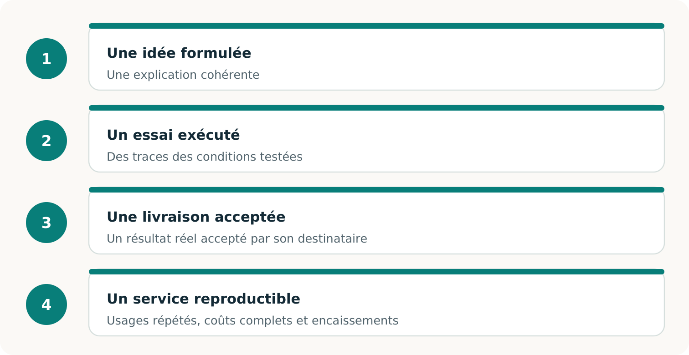
La branche principale établit une exécution logicielle locale. Livraison client et service répétable exigent des preuves supplémentaires. [R2, R4, R6]
Résultat
Le travail prévu respecte-t-il les conditions d’acceptation initiales ?
Faisabilité du service
Des participants volontaires disposent-ils des droits, capacités, délais et financements nécessaires ?
Preuves de marché
Des achats réels, des livraisons acceptées et les coûts complets étayent-ils l’affirmation commerciale ?
Un exercice logiciel exécuté avec des commandes synthétiques
Trois commandes pour comprendre l’enjeu
Une application restaurée peut fonctionner alors que son carnet de commandes est erroné. L’exercice de base révèle ce problème avec trois commandes d’étiquettes. L’historique conservé contient une modification et une annulation absentes de la restauration périmée. [R2]
Commande
Obligation conservée
Dossier restauré périmé
A
1 100 unités
1 000 unités
B
800 unités
Absente
C
Annulée
600 unités encore indiquées
Le total faisant autorité est de 1 900 unités dans deux commandes. Le rapprochement correct doit rétablir B, appliquer la quantité modifiée de A et maintenir l’annulation de C. Une voie ne peut améliorer son résultat apparent en effaçant discrètement une obligation. [R2, R3]
Voie exercée
Résultat consigné
Reprise principale réalisable
Les deux obligations sont réalisées : 1 900/1 900.
Secours autorisé disposant de 2 100 unités
Les deux obligations sont réalisées : 1 900/1 900.
Secours limité à 1 500 unités
A réalisée : 1 100. B refusée : 800. Il ne restait que 400 unités après A.
Ces quantités désignent des résultats logiciels locaux durables. L’exercice n’établit ni l’impression d’étiquettes ni leur livraison à des clients réels. Production physique et acceptation client exigent leurs propres observations. [R2, R3]
À chaque évolution, son dossier de preuves
Lire les résultats sans effacer leur histoire
Dossier
Signification
Prototype de recherche · a755d037
29 tests de l’implémentation réussis ; des contrôles distincts exposent des faiblesses d’entrée et d’authenticité des sources. Transmission synthétique seulement. [R7]
Première qualification · 5c92fd03
Un résumé favorable échoue à une vérification ultérieure. La tentative reste non qualifiée et conservée. [R3]
Banc d’essai qualifié · fa9da1f5
Deuxième tentative : 245 tests et 24 exécutions comparatives. Les 12 paires procédure conventionnelle/banc d’essai sont à égalité. [R3]
Branche principale · 396227d8
Corrections ultérieures des droits de voie et des réservations en file ; 253 tests locaux rapportés. L’historique conserve ses identités. [R5, R9]
Les corrections permettent la reprise principale autorisée sans exiger le partage avec le prestataire de secours. Les deux méthodes réservent aussi par lots bornés pour éviter que tous les baux vieillissent pendant l’attente. Baux courts, échéances et capacité insuffisante restent contraignants. [R5]
Les 245 tests historiques et les 253 tests ultérieurs décrivent des versions différentes. La comparaison préenregistrée établit des méthodes exécutables, avec 12 égalités fonctionnelles. Les 12 entrées d’IA sont NON EXÉCUTÉES ; aucun avantage propre à l’IA ni de coût complet n’est établi. [R1, R3, R5]
Une vérification distincte de la même promesse
Ce que signifie « indépendant » ici
Le vérificateur reconstitue les obligations et examine les résultats durables actuels selon un contrat et une référence conservés séparément. La déclaration du candidat ne suffit pas à établir l’acceptation. [R2, R4]
Construire, contester et vérifier selon la promesse initiale. Rééprouver les corrections ; limiter le verdict aux preuves examinées. [R2, R3, R4]
Conserver l’autorité initiale hors du contrôle permis au candidat ; modifier sa copie ne doit pas modifier l’obligation.
Relire les pièces actuelles. Un passeport enregistré décrit une évaluation passée.
Éprouver le vérificateur, y compris l’acceptation indue et le rejet injustifié. Refuser tous les résultats ne suffit pas à le qualifier.
Comment réfuter une conclusion trop forte
Donner à l’évaluateur un test qui tranche
Une objection utile doit pouvoir changer le verdict. Les épreuves documentées ci-dessous permettent d’examiner les expériences conservées ; aucune nouvelle expérience n’a été réalisée pour ce livre. [R2, R3]
Épreuve
Ce que le contrôle doit établir
Modifier l’obligation du candidat de 1 900 à 1 850 unités en conservant l’autorité originale.
Le dossier modifié ne satisfait pas la promesse complète d’origine. Des empreintes internes cohérentes ne rendent pas cette réécriture officielle.
Modifier un résultat tout en gardant un passeport favorable antérieur.
La nouvelle vérification examine la pièce modifiée. L’ancien rapport ne certifie pas son état actuel.
Supprimer l’empreinte de référence conservée séparément.
L’autorité reste NON ÉTABLIE. Recalculer une empreinte de remplacement commode ne comble pas la lacune.
Faire dépendre le secours de la même dépendance défaillante.
Un secours logique indisponible ne peut justifier une réalisation complète par cette voie.
Soumettre un témoin positif valide à un vérificateur volontairement défectueux.
Un rejet injustifié doit également disqualifier le vérificateur. Une preuve valide doit être acceptée lorsque les conditions déclarées sont remplies.
Donner les mêmes outils et informations à une méthode conventionnelle compétente.
Une égalité ne prouve pas une amélioration. Toute affirmation d’avantage doit résister à la comparaison complète et à son périmètre de coûts.
Pour reproduire une épreuve, conserver l’autorité originale, identifier la copie altérée ou la mutation, consigner la réponse du composant testé puis le verdict de référence distinct. Préciser l’affirmation qui échoue. Le contre-exemple de la fonction partagée — 1 850 unités acceptées face à 1 900 exigées — montre l’intérêt d’éprouver aussi le vérificateur. [R3, R9]
Commandes pour la révision de la branche principale
Reproduire la version logicielle figée
Utiliser Linux x86_64 avec seccomp BPF, Python 3.10 ou ultérieur et Node.js pour les tests web du dépôt. L’exercice par défaut emploie des données synthétiques locales et la bibliothèque standard. Choisir des sorties inutilisées ; conserver les tentatives antérieures. Ces commandes n’ont pas été exécutées pour cette collection. [R2, R5]
Lire le résultat structuré et chaque obligation. Le code de sortie 0 d’une suite signifie que les assertions attendues ont réussi ; cela peut inclure un résultat partiel prévu. La vérification individuelle d’une promesse partielle retourne 3. Le code 2 indique une erreur de commande. La qualification historique possède ses propres références de code et d’archive dans R3. [R2, R3]
Une promesse réelle et un essai commercial maîtrisé
La prochaine preuve décisive
La prochaine observation utile est un exercice autorisé pour une entreprise réelle, avec un prestataire réel et une solution de comparaison capable. Le pilote d’imprimerie décrit dans le dépôt reste une proposition sans approbations réelles. Son intérêt tient au test réfutable qu’il définit. [R6]
Décision
Preuves susceptibles de la changer
La promesse a-t-elle été tenue ?
Une commande authentique, des conditions d’acceptation fixées et la décision d’un évaluateur habilité sur le résultat effectivement produit. Distinguer le substitut d’exercice de la livraison physique au client.
L’arrangement était-il réalisable ?
Consentements réels ; usage licite des données ; capacité qualifiée nette des autres engagements ; dépendances utilisables ; financement de la production, des corrections et des obligations restantes.
L’offre avait-elle un intérêt commercial ?
Décision d’achat réelle, paiement encaissé, coûts complets de campagne et passifs résiduels, comparés à une solution conventionnelle tenant la même promesse et au refus d’achat.
Compter préparation, tentatives infructueuses, intégration, travail humain, réservations, exécution, vérification, transport pertinent, financement, soutien et remboursements. Consigner quand les fonds sont nécessaires et quand ils sont disponibles. Une marge modélisée positive n’établit pas ces observations. [R6, R7]
Une solution conventionnelle gagnante, un refus d’achat ou un échec demeure un constat décisif. Conserver ses conditions et sa raison. L’expérience suivante peut alors traiter l’obstacle démontré sans supposer que le marché existe déjà. [R6, R8]
Du rapport au dossier vérifiable
Laisser un dossier qu’un autre peut examiner
Le lecteur doit retrouver la promesse initiale, l’exécution, le contrôle actuel et l’affirmation avancée. Le banc d’essai sépare ces pièces pour permettre un nouvel examen du résultat. [R2]
Pièce
Points à examiner
INDEX.json
Liste des exécutions, exhaustivité et références conservées. Protéger sa garde lors du transfert des preuves.
Autorité conservée
Contrat, historique et référence d’origine. Distinguer les faits écrits pour l’exercice de ceux authentifiés extérieurement.
Preuves durables et relevé du contrôleur
Base de données, pièces produites, transitions, interruptions et délais observés, dans le modèle de confiance déclaré.
RESULT.json et passeports bilingues
Résultat évalué, conditions échouées ou manquantes et commande exacte de vérification. Une présentation enregistrée conserve son évaluation.
Reçu de nouvelle vérification
Version, pièces actuelles et référence conservée effectivement examinées, verdict et moment du contrôle.
Comprendre le résultat exécuté
Commencer par le guide, les résultats complets et les corrections ultérieures : R2, R3 et R5.
Éprouver les fondements
Lire le modèle de menace, l’expérience préenregistrée et l’historique conservé : R4, R8 et R9.
Décider de l’étape de terrain
Utiliser le pilote proposé R6, les limites historiques de R7 et la carte du dépôt R1.
Les résultats du dépôt renvoient aux essais sources conservés. Cette édition éditoriale ne rapporte aucun nouvel essai sur le terrain ni certification externe.